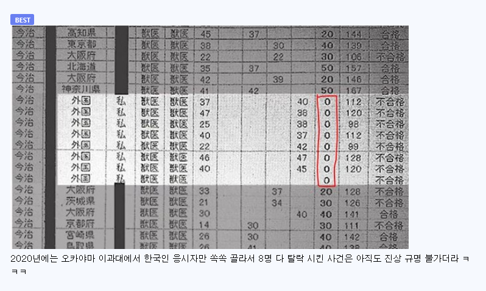

https://bbs.ruliweb.com/best/board/300143/read/76723122
2018년 도쿄의과대학이 여학생의 합격을 제한하기 위해
10년 이상 입학시험 점수를 조작해온 사실을 인정하고 공식 사과했다.
조사 결과에 따르면, 이 대학은 2006년부터 여학생 응시자들의 점수를 일괄 감점하고
남학생들에게 가산점을 주는 방식으로 합격자 비율을 조작해 온 것으로 드러났다.
대학 측은 여성 의사들이 출산이나 육아로 의료 현장을 이탈할 것을 우려해
여학생 입학 비율을 인위적으로 줄였다고 밝혔다.



음